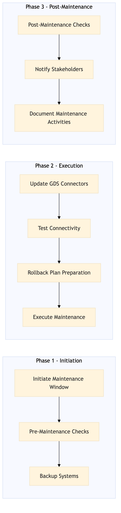

This process document outlines the maintenance of GDS connectivity for Sabre, Amadeus, and Travelport systems within the Expedia Group OTA and Amex GBT / Concur TMC domains.
| Trigger | Scheduled maintenance window or detection of connectivity issues through monitoring tools. |
| Outcome | Successful maintenance with no disruption to service, ensuring all GDS connections are stable and operational. |
| Systems | Expedia Open World Partner Central Amadeus NDC Sabre GDS Travelport EVC One Key TravelAds AWS SageMaker Snowflake Kafka Salesforce Tableau Concur T2 Concur Expense Amex GBT Neo/Complete Amadeus GDS S/4HANA International SOS Cvent Amex Corporate Card VCN Analytics Cloud Workday |

Click to enlarge
| Step | Name & Pain Point | Role | System | Input | Output | KPI | Flags |
|---|---|---|---|---|---|---|---|
| 1.1 | Initiate Maintenance Window Unexpected system failures during maintenance | IT Operations Manager | Expedia Group IT Systems | Maintenance schedule notification | Acknowledged maintenance window | 0 downtime during scheduled window | ⚠ Exception |
| 1.2 | Pre-Maintenance Checks Identifying critical issues before maintenance | Platform Engineer | Expedia Group IT Systems, Amex GBT / Concur TMC | Current system status reports | Pre-maintenance check report | 100% successful pre-checks | ⚠ Exception |
| 1.3 | Backup Systems Data loss during maintenance | IT Operations Manager | Expedia Group IT Systems, Amex GBT / Concur TMC | System configuration data | Complete system backups | 100% successful backups | ⚠ Exception |
| 1.4 | Update GDS Connectors Compatibility issues with new updates | Platform Engineer | Expedia Open World, Partner Central, Amadeus NDC, Sabre GDS, Travelport, EVC, One Key, TravelAds, AWS SageMaker, Snowflake, Kafka, Salesforce, Tableau, Concur T2, Concur Expense, Amex GBT Neo/Complete, Amadeus GDS, S/4HANA, International SOS, Cvent, Amex Corporate Card, VCN, Analytics Cloud, Workday | Latest GDS connector updates | Updated GDS connectors | 100% successful updates | ⚠ Exception |
| 1.5 | Test Connectivity Failed connectivity tests | Platform Engineer | Expedia Group IT Systems, Amex GBT / Concur TMC | Updated GDS connectors | Connectivity test results | 100% successful connectivity tests | ◆ Decision⚠ Exception |
| 1.6 | Rollback Plan Preparation Inadequate rollback procedures | IT Operations Manager | Expedia Group IT Systems, Amex GBT / Concur TMC | Backup data and system configurations | Rollback plan document | 100% rollback plan readiness | ⚠ Exception |
| 1.7 | Execute Maintenance Unexpected system failures | Platform Engineer | Expedia Group IT Systems, Amex GBT / Concur TMC | Updated GDS connectors and test results | Maintenance completion report | 0 downtime during maintenance | ◆ Decision⚠ Exception |
| 1.8 | Post-Maintenance Checks Identifying residual issues after maintenance | Platform Engineer | Expedia Group IT Systems, Amex GBT / Concur TMC | Maintenance completion report | Post-maintenance check report | 100% successful post-checks | ⚠ Exception |
| 1.9 | Notify Stakeholders Communication delays with stakeholders | IT Operations Manager | Expedia Group IT Systems, Amex GBT / Concur TMC | Post-maintenance check report | Stakeholder notification | 100% successful notifications | ⚠ Exception |
| 1.10 | Document Maintenance Activities Inaccurate or incomplete documentation | IT Operations Manager | Expedia Group IT Systems, Amex GBT / Concur TMC | Maintenance logs and reports | Updated maintenance documentation | 100% accurate documentation | ⚠ Exception |